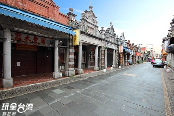
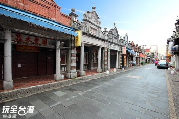

景點介紹
聞名全省的大溪老街主要範圍涵蓋和平路、中山路、中央路三條路上的歷史街屋，早期傳統的商店街並無二致，全是面寬窄縱深長的『街屋』型式，日據時期(西元1919年)，為執行都市計劃，便將和平路、中山路上部份建築拆除，而商家則以繁複華麗的浮雕圖案，呈現巴洛克風情，另外來到大溪，除了老街上有解說員的導覽外，中山老街廣場還有人教您如何打陀螺，回味童時純真，而附近的慈湖、中正公園、蔣公紀念堂更形成了旅行線上必玩的旅遊的據點。
聞名全省的大溪老街主要範圍涵蓋和平路、中山路、中央路三條路上的歷史街屋，早期傳統的商店街並無二致，全是面寬窄縱深長的『街屋』型式，日據時期(西元1919年)，為執行都市計劃，便將和平路、中山路上部份建築拆除，而商家則以繁複華麗的浮雕圖案，呈現巴洛克風情，另外來到大溪，除了老街上有解說員的導覽外，中山老街廣場還有人教您如何打陀螺，回味童時純真，而附近的慈湖、中正公園、蔣公紀念堂更形成了旅行線上必玩的旅遊的據點。
